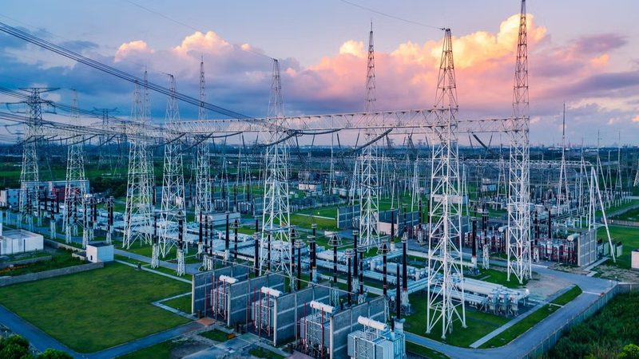
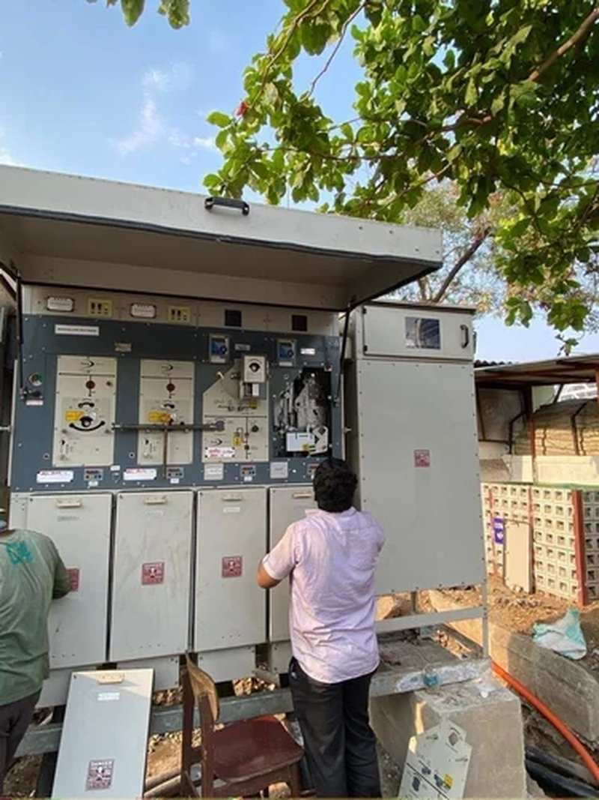

Electrical EPC services for utilities, industry & commercial infrastructure.
Royal Infra Projects delivers the complete electrical infrastructure lifecycle — survey and design, HT & LT network construction, switchgear and substation commissioning, testing and fault rectification, and long-term operations & maintenance — under a single accountable contract.
Getting the scheme right before the first trench
Route surveys, load studies and design decisions taken early are what keep a project from being rebuilt later.

Electrical system design
HT & LT distribution scheme design, cable sizing and route engineering, substation and RMU/DTR layouts, protection coordination and earthing design, with drawings issued for approval and construction.

Technical & commercial consultancy
Feasibility studies, site and route assessment, underground utility surveys, load and capacity planning, statutory liaison guidance, and cost, material and procurement optimisation for tender or execution stage.
Building and energising the network
The physical execution disciplines our own crews and equipment run day to day, at HT and LT voltage levels.

11kV HT & LT network construction
Construction of 11kV high-tension and low-tension distribution networks, overhead-to-underground conversion, underground cable laying and ducting, RMU and DTR foundations, and overhead line erection and stringing.

Erection through to energisation
Distribution substation erection and commissioning, RMU and switchgear installation, transformer placement and charging, HT/LT cable jointing and termination, and complete earthing and protection systems.

Panel boards and building distribution
LT panel board erection, busbar and feeder termination, cable tray and containment routing, MCC and control panel installation, and internal electrical distribution for commercial and industrial premises.

Generation connected to the grid
Solar plant electrical balance-of-system, inverter and transformer interconnection, HT evacuation lines and metering, and commissioning coordinated directly with the distribution licensee for approval and synchronisation.

The groundwork underneath it all
Utility shifting and dismantling for road and infrastructure projects, HDD and trenchless road crossings, foundations and associated civil works, and full site restoration and reinstatement after cable works.

One contract, one accountable contractor
Design-to-energisation delivery under a single contract — crew mobilisation, material procurement, vendor coordination, milestone tracking and handover documentation for multi-site or multi-discipline programmes.
Proving it works — and keeping it working
Backed by our own diagnostic instruments, cable fault locators and underground utility detection equipment.

Pre-commissioning and routine testing
Insulation resistance and high-voltage testing, transformer and switchgear testing, relay and protection setting verification, earth resistance measurement, load and thermographic surveys with formal test reports.

Locate the fault, restore the supply
HT and LT cable fault location using in-house thumper and locator equipment, underground route tracing and utility detection, fault excavation, joint replacement and permanent rectification with minimum outage time.

Operations & maintenance contracts
Annual maintenance contracts (AMC) for substations, RMUs, panels and feeders; scheduled preventive maintenance; asset performance monitoring; power factor correction; and rapid-response breakdown attendance.
The management layer that keeps it predictable
For clients running large or multi-site programmes who need visibility, not just a crew on site.

Consistency you can audit
Site-specific standard operating procedures and method statements, permit-to-work systems, daily project management checklists, and a structured progress, safety and quality reporting cadence.
Independent oversight, one point of contact
Independent third-party progress and quality monitoring on behalf of clients, a dedicated point of contact through the project lifecycle, and transparent milestone, measurement and cost reporting.

We own the crews and the equipment.
Most of what a project needs sits inside the company, so mobilisation doesn't wait on a subcontractor's calendar and diagnostics don't wait on a rented instrument.
- In-house manpower — directly employed jointers, linemen, electricians, supervisors and civil crews.
- HDD machines — horizontal directional drilling for trenchless road and utility crossings.
- Cable fault-finding equipment — surge generators, locators and route tracers for HT and LT cable.
- Underground utility locators — pre-excavation detection to protect existing buried services.
- Survey instruments — Leica-grade equipment for route survey, levelling and as-built recording.
Every service runs under the same management system.
Quality, environmental and occupational health & safety management are independently certified and applied across our entire scope of work — not selectively per project.
Not sure which discipline you need?
Describe the site and objective — we'll scope the right combination of services for you.